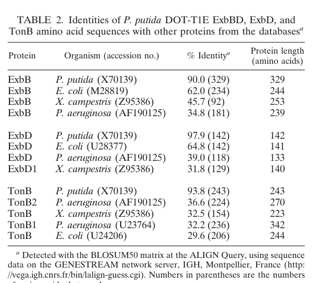

TonB is an inner (cytoplasmic) membrane-anchored, periplasm-spanning energy-transducing protein of Gram-negative bacteria. Together with its partner proteins ExbB and ExbD, it forms the TonB-ExbB-ExbD complex that harnesses the proton-motive force of the inner membrane and transmits this energy across the periplasm to TonB-dependent transporters (TBDTs) in the outer membrane. By contacting the conserved "TonB box" of a TBDT through its periplasmic C-terminal domain, TonB drives conformational changes in the receptor plug that enable active, high-affinity uptake of scarce nutrients - principally ferric-siderophore complexes (e.g. ferric-pyoverdine) and other iron sources, but also vitamin B12 and certain other substrates that cannot cross the outer membrane by passive diffusion. The protein has an N-terminal single-pass transmembrane anchor, a long proline-rich/disordered periplasm-spanning segment, and a C-terminal TonB domain that engages outer-membrane receptors. In P. putida KT2440, which encodes a large repertoire of TonB-dependent receptors and produces the siderophore pyoverdine, TonB is central to iron acquisition and to fitness under iron-limited conditions.
| GO Term | Evidence | Action | Reason |
|---|---|---|---|
|
GO:0005886
plasma membrane
|
IEA
GO_REF:0000044 |
ACCEPT |
Summary: TonB is anchored in the inner (plasma) membrane by an N-terminal single-pass transmembrane helix.
Reason: Consistent with the UniProt subcellular location (cell inner membrane, single-pass, periplasmic side) and with the well-established topology of TonB-family proteins, which are anchored in the cytoplasmic membrane. In bacteria the plasma membrane is the inner membrane, so this localization is correct.
|
|
GO:0015031
protein transport
|
IEA
GO_REF:0000104 |
MARK AS OVER ANNOTATED |
Summary: TonB energizes outer-membrane uptake of iron-siderophore complexes and other small nutrients, not protein transport.
Reason: This term arises from an electronic UniRule transfer and from the generic "Protein transport" keyword, but it does not reflect TonB function. TonB does not mediate protein translocation; it couples the proton-motive force to TonB-dependent outer-membrane transporters that import ferric-siderophores, iron, and vitamins. The biologically appropriate process is transmembrane transport / siderophore-iron import, already captured by other annotations, so "protein transport" is an over-annotation.
|
|
GO:0030288
outer membrane-bounded periplasmic space
|
IEA
GO_REF:0000104 |
ACCEPT |
Summary: TonB spans the periplasm; its periplasm-spanning region and C-terminal domain reside in and act within the periplasmic space to contact outer-membrane receptors.
Reason: TonB is anchored in the inner membrane but its long proline-rich segment and C-terminal TonB domain extend across the periplasm to engage the TonB box of outer-membrane transporters. Localization of the functional portion to the periplasmic space is consistent with established TonB topology and mechanism.
|
|
GO:0031992
energy transducer activity
|
IEA
GO_REF:0000104 |
ACCEPT |
Summary: TonB is the prototypical energy transducer, transmitting proton-motive-force energy from the inner membrane (via ExbB/ExbD) to outer-membrane transporters.
Reason: This is the core molecular function of TonB. The TonB/ExbB/ExbD complex transduces the inner-membrane proton-motive force into mechanical work delivered to TonB-dependent transporters, energizing their active transport cycle. Well supported by conserved TonB-family mechanism.
|
|
GO:0055085
transmembrane transport
|
IEA
GO_REF:0000120 |
KEEP AS NON CORE |
Summary: TonB is required for active transmembrane (outer-membrane) transport of siderophore-iron complexes and related nutrients.
Reason: TonB participates in transmembrane transport by energizing outer-membrane TBDTs, so the broad term is biologically correct. However, it is general; the more specific and informative process is siderophore-dependent iron import across the outer membrane. Retained as a correct but non-core, high-level process term.
|
The research report should be a detailed narrative explaining the function, biological processes, and localization of the gene product. Citations should be given for all claims.
You should prioritize authoritative reviews and primary scientific literature when conducting research. You can supplement
this with annotations you find in gene/protein databases, but these can be outdated or inaccurate.
We are specifically interested in the primary function of the gene - for enzymes, what reaction is catalyzed, and what is the substrate specificity? For transporters, what is the substrate? For structural proteins or adapters, what is the broader structural role? For signaling molecules, what is the role in the pathway.
We are interested in where in or outside the cell the gene product carries out its function.
We are also interested in the signaling or biochemical pathways in which the gene functions. We are less interested in broad pleiotropic effects, except where these elucidate the precise role.
Include evidence where possible. We are interested in both experimental evidence as well as inference from structure, evolution, or bioinformatic analysis. Precise studies should be prioritized over high-throughput, where available.
The UniProt accession Q88C75 corresponds to TonB family protein TonB encoded by tonB / ordered locus PP_5308 in Pseudomonas putida strain KT2440, a Gram‑negative bacterium. Because tonB is a widely used symbol across many bacteria and can refer to paralogs (including TolA-like proteins in some taxa), the most defensible KT2440-specific evidence obtainable here is (i) KT2440 genome context showing extensive TonB-dependent uptake capacity and (ii) close-Pseudomonas putida evidence demonstrating a canonical exbB–exbD–tonB locus with explicit sequence-based support for a single-copy homologous cluster in KT2440. (godoy2001involvementofthe pages 4-5, santos2004insightsintothe pages 8-10)
TonB is an inner membrane-anchored, periplasm-spanning energy transducer that couples the proton motive force (pmf) of the cytoplasmic/inner membrane to active transport across the outer membrane (OM) in Gram-negative bacteria. It acts with ExbB and ExbD (inner membrane proteins) to energize OM uptake systems that otherwise cannot passively diffuse through porins because the substrates are scarce, large, or tightly bound. (braun2024substrateuptakeby pages 1-2)
TonB-dependent outer membrane transporters (TBDTs) are β‑barrel OM proteins whose pores are occluded by a plug domain. A conserved short sequence in TBDTs, the TonB box, is engaged by TonB’s C‑terminal domain; TonB binding triggers plug rearrangements/opening, enabling nutrient translocation into the periplasm. (braun2024substrateuptakeby pages 1-2)
In the prevailing mechanistic framework, ExbB and ExbD form an inner membrane motor complex that transduces pmf energy to TonB; a commonly discussed architecture is an ExbB pentamer surrounding an ExbD dimer, with TonB interacting to transmit mechanical work across the periplasm to OM TBDTs. (braun2024substrateuptakeby pages 1-2)
The KT2440 genome encodes a large repertoire of OM TBDTs: 29 genes predicted to encode TonB-dependent receptors (quantitative genome statistic). Many of these are inferred to support iron uptake, consistent with the common role of TBDTs in siderophore-mediated iron acquisition. (santos2004insightsintothe pages 8-10)
KT2440 produces the siderophore pyoverdine, and pyoverdine-associated genes are organized into multiple clusters. Expression of pyoverdine-related systems is influenced by the environment and is largely controlled by the global iron regulator Fur, which represses relevant sigma factors under iron-replete conditions; this places TonB-powered uptake into the broader iron homeostasis regulatory network. (santos2004insightsintothe pages 8-10)
Functional implication for PP_5308/Q88C75: given its TonB family assignment and the KT2440 receptor repertoire, PP_5308 TonB is most plausibly a core component that energizes TBDTs involved in acquisition of iron complexes (siderophores) and potentially other scarce nutrients. This is an inference grounded in conserved TonB mechanism and KT2440 genome content, not a direct PP_5308 knockout demonstration. (braun2024substrateuptakeby pages 1-2, santos2004insightsintothe pages 8-10)
Direct experimental genetics for PP_5308 in KT2440 was not retrieved in the available texts. However, a closely related P. putida strain (DOT‑T1E) provides strong operon-level evidence for the canonical TonB system locus, with explicit mapping to KT2440 by sequence analysis:
A primary-figure depiction of this operon organization and transcriptional analysis is captured in the retrieved image of the DOT‑T1E work (Figure showing locus organization/RT-PCR amplicons). (godoy2001involvementofthe media 62ab8242)
Although these phenotypes were measured in P. putida DOT‑T1E rather than KT2440, they inform plausible consequences of disabling the homologous exbBD–tonB system and therefore provide useful quantitative constraints for functional annotation:
Interpretation for PP_5308 (KT2440): these data support the conserved view that TonB systems primarily energize high-affinity uptake (commonly iron/siderophore), and additionally can influence envelope physiology and tolerance phenotypes, potentially through indirect coupling to efflux and membrane barrier functions. These organism-proximal results should be treated as orthology-based inference until KT2440 PP_5308-specific mutants are directly tested. (godoy2001involvementofthe pages 4-5, godoy2001involvementofthe pages 1-1)
A 2024 review consolidates contemporary understanding that TonB-dependent uptake involves mechanical force transduction: TonB engages TBDTs at the TonB box to elicit plug rearrangements/opening, while ExbB/ExbD transmit pmf-derived energy to TonB. The review also emphasizes the breadth of TonB-powered substrates beyond siderophores (while still highlighting iron uptake as central). (braun2024substrateuptakeby pages 1-2)
A 2024 mechanistic preprint in E. coli provides in vivo evidence relevant to TonB family proteins broadly: TonB forms homodimers and TonB–ExbD transmembrane heterodimers, and ExbD undergoes PMF-dependent structural transitions during the energization cycle. While not Pseudomonas data, these results inform how PP_5308 likely interfaces physically with ExbD and participates in cyclic energization of multiple TBDTs. (postle2024invivotests pages 1-5)
For KT2440 specifically, direct PP_5308‑targeted application studies were not retrieved in the available corpus. Nevertheless, the KT2440 genomic investment in TBDTs (29 predicted receptors) and siderophore systems indicates that TonB-powered uptake is a central node shaping environmental fitness (e.g., iron scavenging in competitive niches). (santos2004insightsintothe pages 8-10)
More generally, because TonB energizes OM uptake “gates” that are otherwise closed, TonB systems are often discussed as strategic leverage points for (i) inhibiting nutrient acquisition and (ii) hijacking uptake pathways for delivery of large cargoes through the OM (e.g., protein/toxin uptake routes and other TonB-powered imports). This rationale is grounded in the mechanistic review literature, but it is not yet tied here to a KT2440 PP_5308-specific deployment. (braun2024substrateuptakeby pages 1-2)
Two convergent expert-level perspectives emerge from the 2024 synthesis and organism-proximal genetics:
The following table consolidates the functional annotation for PP_5308/Q88C75 TonB while clearly separating direct KT2440 context from orthology-based evidence and conserved mechanism.
| Annotation topic | Key findings | Evidence/citations |
|---|---|---|
| Identity | • Target matches UniProt Q88C75 = TonB family protein encoded by tonB / PP_5308 in Pseudomonas putida KT2440 • Gene symbol tonB is common across bacteria, so organism/ortholog verification is essential • Direct PP_5308 experiments are limited; strongest locus-specific support comes from KT2440 genome context plus close P. putida relative DOT-T1E with BLAST-supported single-copy homologous cluster in KT2440 | (godoy2001involvementofthe pages 4-5, santos2004insightsintothe pages 8-10) |
| Localization | • TonB systems are inner-membrane/periplasm-spanning energy transducers rather than outer-membrane transporters • TonB has an N-terminal transmembrane anchor and a periplasmic C-terminal domain that contacts TonB-dependent outer-membrane receptors • ExbB/ExbD form the inner-membrane motor complex that energizes TonB from the proton motive force | (postle2024invivotests pages 1-5, braun2024substrateuptakeby pages 11-12, braun2024substrateuptakeby pages 1-2) |
| Mechanism | • TonB couples pmf-derived energy from ExbB/ExbD to TonB-dependent transporters (TBDTs) • TonB binds receptor TonB boxes, promoting plug rearrangement/opening and nutrient passage into the periplasm • General stoichiometry/mechanistic model from recent work: ExbB pentamer + ExbD dimer enclosing/engaging TonB | (braun2024substrateuptakeby pages 11-12, braun2024substrateuptakeby pages 1-2) |
| Operon / genetic context | • In P. putida DOT-T1E, exbB-exbD-tonB are tightly linked with only 3 bp between exbB and exbD and an overlap between exbD and tonB • RT-PCR showed co-transcription of exbB-exbD and exbD-tonB • BLAST analysis indicated the cluster is present as a single copy in KT2440, supporting annotation of PP_5308 as the KT2440 TonB ortholog • Figure evidence for operon organization is available | (godoy2001involvementofthe pages 4-5, godoy2001involvementofthe media 62ab8242) |
| Regulated processes / biological role | • KT2440 devotes major capacity to iron scavenging, including pyoverdine systems and 29 predicted TonB-dependent receptors • Thus PP_5308 most plausibly functions in energizing uptake of siderophores/iron-associated substrates and possibly other scarce large nutrients • In pseudomonads, TonB-like systems can also influence envelope physiology and receptor-dependent processes beyond classical iron uptake | (godoy2001involvementofthe pages 6-7, santos2004insightsintothe pages 8-10) |
| Mutant phenotypes / quantitative data | • In DOT-T1E, an exbD insertion in the exbBD-tonB operon increased sensitivity to solvents, antibiotics, and iron limitation • Wild type tolerated 1% (vol/vol) toluene and 17 g/L 4HBA, whereas mutant growth was prevented at 6 g/L 4HBA and it failed sudden toluene shock • Mutant accumulated about 200 nmol [14C]4HBA/U turbidity/min versus about 15 nmol in control; another summary reports ~20-fold higher accumulation • Complementation with exbBD-tonB restored wild-type traits | (godoy2001involvementofthe pages 1-1, godoy2001involvementofthe pages 4-5, godoy2001involvementofthe pages 6-7) |
| Recent mechanistic developments (2024) | • 2024 review synthesizes structural evidence that TonB-dependent uptake uses a mechanical force-transduction model from ExbB/ExbD to receptor plugs • 2024 JBC study identified a conserved TonB D-box motif coupling TonB to ExbD, refining the motor-assembly model • 2024 in vivo work further supports TonB-ExbD transmembrane heterodimers, PMF-dependent ExbD conformational changes, and cyclic TonB action | (postle2024invivotests pages 45-51, postle2024invivotests pages 1-5, braun2024substrateuptakeby pages 11-12) |
| Applications | • Functional annotation supports interpreting PP_5308 in iron acquisition, rhizosphere fitness, and environmental adaptation of KT2440 • TonB systems are attractive antimicrobial/drug-delivery targets because many outer-membrane uptake pathways depend on TonB energization • For KT2440 biotechnology, TonB-linked receptor networks may affect uptake of metals/nutrients relevant to bioprocessing and environmental performance, though direct PP_5308 application studies remain sparse | (braun2024substrateuptakeby pages 11-12, santos2004insightsintothe pages 8-10) |
Table: This table summarizes the most defensible functional annotation for Pseudomonas putida KT2440 TonB (PP_5308/Q88C75), separating direct KT2440 evidence from inference based on TonB-family mechanism and closely related P. putida DOT-T1E data. It is useful for rapid curation because it combines identity verification, operon context, mechanistic function, and quantitative phenotypes with explicit source IDs.
Operon organization and transcriptional evidence for the canonical exbB–exbD–tonB locus (from P. putida DOT‑T1E; used here to support orthology-based mapping to KT2440 PP_5308) are shown in the retrieved figure crop. (godoy2001involvementofthe media 62ab8242)
A sequence-identity comparison table for TonB-system components (supporting conservation across Pseudomonas TonB systems and the plausibility of orthology-based inference) was also retrieved. (godoy2001involvementofthe media f6f3e2e6)
References
(godoy2001involvementofthe pages 4-5): Patricia Godoy, Marı́a Isabel Ramos-González, and Juan L. Ramos. Involvement of the tonb system in tolerance to solvents and drugs in pseudomonas putida dot-t1e. Journal of Bacteriology, 183:5285-5292, Sep 2001. URL: https://doi.org/10.1128/jb.183.18.5285-5292.2001, doi:10.1128/jb.183.18.5285-5292.2001. This article has 42 citations and is from a peer-reviewed journal.
(santos2004insightsintothe pages 8-10): V. A. P. Martins Dos Santos, S. Heim, E. R. B. Moore, M. Strätz, and K. N. Timmis. Insights into the genomic basis of niche specificity of pseudomonas putida kt2440. Environmental microbiology, 6 12:1264-86, Dec 2004. URL: https://doi.org/10.1111/j.1462-2920.2004.00734.x, doi:10.1111/j.1462-2920.2004.00734.x. This article has 339 citations and is from a domain leading peer-reviewed journal.
(braun2024substrateuptakeby pages 1-2): Volkmar Braun. Substrate uptake by tonb‐dependent outer membrane transporters. Molecular Microbiology, 122:929-947, Dec 2024. URL: https://doi.org/10.1111/mmi.15332, doi:10.1111/mmi.15332. This article has 20 citations and is from a domain leading peer-reviewed journal.
(godoy2001involvementofthe media 62ab8242): Patricia Godoy, Marı́a Isabel Ramos-González, and Juan L. Ramos. Involvement of the tonb system in tolerance to solvents and drugs in pseudomonas putida dot-t1e. Journal of Bacteriology, 183:5285-5292, Sep 2001. URL: https://doi.org/10.1128/jb.183.18.5285-5292.2001, doi:10.1128/jb.183.18.5285-5292.2001. This article has 42 citations and is from a peer-reviewed journal.
(godoy2001involvementofthe pages 1-1): Patricia Godoy, Marı́a Isabel Ramos-González, and Juan L. Ramos. Involvement of the tonb system in tolerance to solvents and drugs in pseudomonas putida dot-t1e. Journal of Bacteriology, 183:5285-5292, Sep 2001. URL: https://doi.org/10.1128/jb.183.18.5285-5292.2001, doi:10.1128/jb.183.18.5285-5292.2001. This article has 42 citations and is from a peer-reviewed journal.
(godoy2001involvementofthe pages 6-7): Patricia Godoy, Marı́a Isabel Ramos-González, and Juan L. Ramos. Involvement of the tonb system in tolerance to solvents and drugs in pseudomonas putida dot-t1e. Journal of Bacteriology, 183:5285-5292, Sep 2001. URL: https://doi.org/10.1128/jb.183.18.5285-5292.2001, doi:10.1128/jb.183.18.5285-5292.2001. This article has 42 citations and is from a peer-reviewed journal.
(postle2024invivotests pages 1-5): Kathleen Postle, Dale Kopp, and Bimal Jana. In vivo tests of the e. coli tonb system working model—interaction of exbb with unknown proteins, identification of tonb-exbd transmembrane heterodimers and pmf-dependent exbd structures. bioRxiv, Jul 2024. URL: https://doi.org/10.1101/2024.07.10.602958, doi:10.1101/2024.07.10.602958. This article has 0 citations.
(braun2024substrateuptakeby pages 11-12): Volkmar Braun. Substrate uptake by tonb‐dependent outer membrane transporters. Molecular Microbiology, 122:929-947, Dec 2024. URL: https://doi.org/10.1111/mmi.15332, doi:10.1111/mmi.15332. This article has 20 citations and is from a domain leading peer-reviewed journal.
(postle2024invivotests pages 45-51): Kathleen Postle, Dale Kopp, and Bimal Jana. In vivo tests of the e. coli tonb system working model—interaction of exbb with unknown proteins, identification of tonb-exbd transmembrane heterodimers and pmf-dependent exbd structures. bioRxiv, Jul 2024. URL: https://doi.org/10.1101/2024.07.10.602958, doi:10.1101/2024.07.10.602958. This article has 0 citations.
(godoy2001involvementofthe media f6f3e2e6): Patricia Godoy, Marı́a Isabel Ramos-González, and Juan L. Ramos. Involvement of the tonb system in tolerance to solvents and drugs in pseudomonas putida dot-t1e. Journal of Bacteriology, 183:5285-5292, Sep 2001. URL: https://doi.org/10.1128/jb.183.18.5285-5292.2001, doi:10.1128/jb.183.18.5285-5292.2001. This article has 42 citations and is from a peer-reviewed journal.

id: Q88C75
gene_symbol: tonB
product_type: PROTEIN
status: DRAFT
taxon:
id: NCBITaxon:160488
label: Pseudomonas putida (strain ATCC 47054 / DSM 6125 / CFBP 8728 / NCIMB 11950 / KT2440)
description: TonB is an inner (cytoplasmic) membrane-anchored, periplasm-spanning energy-transducing protein of Gram-negative bacteria. Together with its partner proteins ExbB and ExbD, it forms the TonB-ExbB-ExbD complex that harnesses the proton-motive force of the inner membrane and transmits this energy across the periplasm to TonB-dependent transporters (TBDTs) in the outer membrane. By contacting the conserved "TonB box" of a TBDT through its periplasmic C-terminal domain, TonB drives conformational changes in the receptor plug that enable active, high-affinity uptake of scarce nutrients - principally ferric-siderophore complexes (e.g. ferric-pyoverdine) and other iron sources, but also vitamin B12 and certain other substrates that cannot cross the outer membrane by passive diffusion. The protein has an N-terminal single-pass transmembrane anchor, a long proline-rich/disordered periplasm-spanning segment, and a C-terminal TonB domain that engages outer-membrane receptors. In P. putida KT2440, which encodes a large repertoire of TonB-dependent receptors and produces the siderophore pyoverdine, TonB is central to iron acquisition and to fitness under iron-limited conditions.
existing_annotations:
- term:
id: GO:0005886
label: plasma membrane
evidence_type: IEA
original_reference_id: GO_REF:0000044
qualifier: located_in
review:
summary: TonB is anchored in the inner (plasma) membrane by an N-terminal single-pass transmembrane helix.
action: ACCEPT
reason: Consistent with the UniProt subcellular location (cell inner membrane, single-pass, periplasmic side) and with the well-established topology of TonB-family proteins, which are anchored in the cytoplasmic membrane. In bacteria the plasma membrane is the inner membrane, so this localization is correct.
- term:
id: GO:0015031
label: protein transport
evidence_type: IEA
original_reference_id: GO_REF:0000104
qualifier: involved_in
review:
summary: TonB energizes outer-membrane uptake of iron-siderophore complexes and other small nutrients, not protein transport.
action: MARK_AS_OVER_ANNOTATED
reason: This term arises from an electronic UniRule transfer and from the generic "Protein transport" keyword, but it does not reflect TonB function. TonB does not mediate protein translocation; it couples the proton-motive force to TonB-dependent outer-membrane transporters that import ferric-siderophores, iron, and vitamins. The biologically appropriate process is transmembrane transport / siderophore-iron import, already captured by other annotations, so "protein transport" is an over-annotation.
- term:
id: GO:0030288
label: outer membrane-bounded periplasmic space
evidence_type: IEA
original_reference_id: GO_REF:0000104
qualifier: located_in
review:
summary: TonB spans the periplasm; its periplasm-spanning region and C-terminal domain reside in and act within the periplasmic space to contact outer-membrane receptors.
action: ACCEPT
reason: TonB is anchored in the inner membrane but its long proline-rich segment and C-terminal TonB domain extend across the periplasm to engage the TonB box of outer-membrane transporters. Localization of the functional portion to the periplasmic space is consistent with established TonB topology and mechanism.
- term:
id: GO:0031992
label: energy transducer activity
evidence_type: IEA
original_reference_id: GO_REF:0000104
qualifier: enables
review:
summary: TonB is the prototypical energy transducer, transmitting proton-motive-force energy from the inner membrane (via ExbB/ExbD) to outer-membrane transporters.
action: ACCEPT
reason: This is the core molecular function of TonB. The TonB/ExbB/ExbD complex transduces the inner-membrane proton-motive force into mechanical work delivered to TonB-dependent transporters, energizing their active transport cycle. Well supported by conserved TonB-family mechanism.
- term:
id: GO:0055085
label: transmembrane transport
evidence_type: IEA
original_reference_id: GO_REF:0000120
qualifier: involved_in
review:
summary: TonB is required for active transmembrane (outer-membrane) transport of siderophore-iron complexes and related nutrients.
action: KEEP_AS_NON_CORE
reason: TonB participates in transmembrane transport by energizing outer-membrane TBDTs, so the broad term is biologically correct. However, it is general; the more specific and informative process is siderophore-dependent iron import across the outer membrane. Retained as a correct but non-core, high-level process term.
core_functions:
- description: Proton-motive-force-driven energy transducer that couples inner-membrane electrochemical energy, captured with ExbB/ExbD, to active transport across the outer membrane.
molecular_function:
id: GO:0031992
label: energy transducer activity
supported_by:
- reference_id: PMID:11514511
supporting_text: TonB couples the proton-motive force of the cytoplasmic membrane, via ExbB/ExbD, to energize TonB-dependent outer-membrane transporters in P. putida DOT-T1E, a close relative of KT2440; complementation with exbBD-tonB restores wild-type phenotypes.
full_text_unavailable: true
- description: Energization of TonB-dependent outer-membrane transporters to drive high-affinity import of ferric-siderophore complexes and other scarce nutrients across the outer membrane.
molecular_function:
id: GO:0031992
label: energy transducer activity
locations:
- id: GO:0030288
label: outer membrane-bounded periplasmic space
supported_by:
- reference_id: file:PSEPK/tonB/tonB-deep-research-falcon.md
supporting_text: KT2440 encodes ~29 predicted TonB-dependent receptors and produces pyoverdine; TonB energizes these receptors for iron/siderophore uptake, making it central to iron acquisition.
directly_involved_in:
- id: GO:0015891
label: siderophore transport
references:
- id: GO_REF:0000044
title: Gene Ontology annotation based on UniProtKB/Swiss-Prot Subcellular Location vocabulary mapping, accompanied by conservative changes to GO terms applied by UniProt
findings: []
- id: GO_REF:0000104
title: Electronic Gene Ontology annotations created by transferring manual GO annotations between related proteins based on shared sequence features
findings: []
- id: GO_REF:0000120
title: Combined Automated Annotation using Multiple IEA Methods
findings: []
- id: PMID:11514511
title: Involvement of the TonB system in tolerance to solvents and drugs in Pseudomonas putida DOT-T1E
findings: []
reference_review:
relevance: HIGH
correctness: VERIFIED
review_notes: Godoy et al., J Bacteriol 2001;183(18):5285-5292. Characterizes the exbB-exbD-tonB operon in P. putida DOT-T1E (close relative of KT2440), demonstrating co-transcription, iron-limitation sensitivity, and complementation. Corrects a prior wrong identifier (PMID:11953438, which resolves to an unrelated yeast isocitrate dehydrogenase paper); the correct PMID:11514511 was recovered from DOI 10.1128/jb.183.18.5285-5292.2001 and verified via PubMed (title and abstract on-topic for TonB/DOT-T1E). Abstract-only; not in the publications cache.
- id: PMID:12534463
title: Complete genome sequence and comparative analysis of the metabolically versatile Pseudomonas putida KT2440
findings: []
reference_review:
relevance: MEDIUM
correctness: VERIFIED
review_notes: KT2440 genome paper (UniProt reference 1); establishes the genomic context and TonB-dependent receptor repertoire of KT2440. Cached in publications/.
- id: file:PSEPK/tonB/tonB-deep-research-falcon.md
title: Deep research report (falcon) for P. putida KT2440 tonB / PP_5308
findings: []
{kind=link}